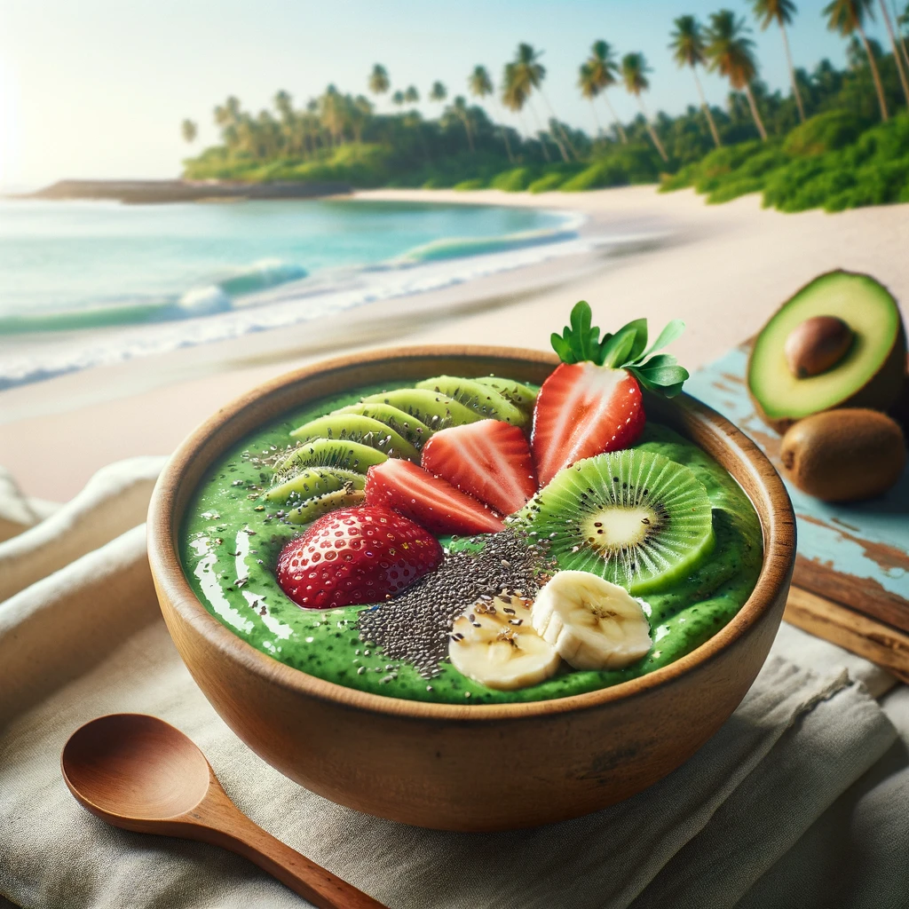

Tropical Smoothie Bowl

Description
The Tropical Smoothie Bowl is a blissful blend of smooth, creamy avocado, ripe banana, and fresh spinach, served in a bowl and topped with slices of strawberry and kiwi, along with a sprinkle of chia seeds. This dish captures the essence of tropical freshness, offering a nutritious and energizing start to the day. Its vibrant green base is not only appealing to the eye but also rich in vitamins and fiber, making it a perfect choice for a healthy breakfast or a refreshing snack. The combination of fruits provides a sweet and tangy flavor, while the chia seeds add a crunch, creating a delightful texture contrast.
Ingredients
- 1 ripe avocado
- 1 ripe banana
- 1 cup fresh spinach leaves
- 1/2 cup coconut water or almond milk (adjust for desired thickness)
- 1/2 cup strawberries, sliced
- 1 kiwi, peeled and sliced
- 1 tablespoon chia seeds
Steps
- Blend the Smoothie Base:
In a blender, combine the avocado, banana, spinach, and coconut water or almond milk. Blend until smooth and creamy. The mixture should be thick enough to eat with a spoon; adjust the amount of liquid as needed to achieve the right consistency.
- Prepare the Toppings:
Slice the strawberries and kiwi into thin pieces for topping the smoothie bowl.
- Assemble the Smoothie Bowl:
Pour the smoothie mixture into a bowl. Arrange the sliced strawberries and kiwi on top of the smoothie base in a visually appealing pattern.
- Add Final Touches:
Sprinkle the chia seeds over the top of the smoothie bowl for a nutritious boost and a bit of texture.
- Serve:
Enjoy your tropical smoothie bowl with a wooden spoon, ideally in a serene setting that matches the beach vibe of the dish. This meal is not only a feast for the eyes but also packed with vitamins, fiber, and healthy fats, making it a perfectly balanced and satisfying breakfast or snack.